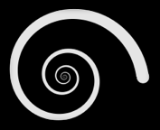

כאשר משלבים סיבוב ושינוי קנה מידה ומבצעים זאת בצורה מחזורית, מתקבלים אובייקטים לולייניים (ספירליים) מרתקים. דרך פשוטה ליצור תבניות מעין אלה מוצגת בצד ימין.
יש להתחיל במצולע כלשהו בעל ארבע צלעות שקדקודיו הם ABCD. כעת יש ליצור העתק של הצורה הראשונית תוך סיבוב ושינוי הגודל שלה, ובאופן שהקדקוד CD של המצולע הראשון חופף לקדקוד AB של המצולע החדש. לאחר מכן, יש לחזור על התהליך שוב ושוב.
ההמחשה הגרפית מימין מדגימה את התהליך באמצעות מצולע כלשהו בעל ארבע צלעות שניתן להזיז את פינותיו בצורה חופשית.
|  |